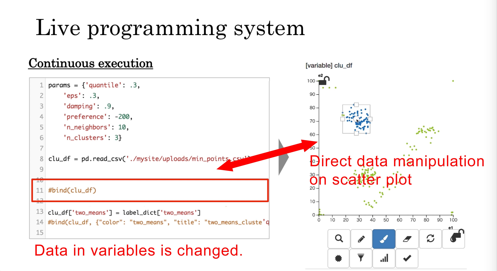

Plotshop Project Page
Plotshop
Kentaro Asai, Tsukasa Fukusato, and Takeo Igarashi. "Integrated Development Environment with Interactive Scatter Plot for Examining Statistical Modeling.", CHI 2020. (pdf)
(project)link
(video)link
About Plotshop?
The development of a statistical modeling program requires example data to observe and verify the behavior of the program. Such example data are either taken from an existing dataset or synthesized using commands. Programmers may want to directly design an arbitrary dataset or modify it interactively, but it is difficult to do so in current development environments. We therefore propose combining a code editor with an interactive scatter plot editor to efficiently understand the behavior of statistical modeling algorithms. The user interactively creates and modifies the dataset on the scatter plot editor, while the system continuously executes the code in the editor, taking the data as input, and shows the result in the editor. This paper presents the design rationale behind the system and introduces several usage scenarios.
Functions
Execute Python Code on WebBrowser
Direct Variables Visualization
Bi-directional Programming Environment
 server
serverServer
- Django
Client
- React
- Redux
Related Publications
- Kentaro Asai, Tsukasa Fukusato, and Takeo Igarashi. "Plotshop: An Interactive System for Designing a 2D Data Distribution on a Scatter Plot." 32nd ACM Symposium on User Interface Software and Technology (UIST), poster, New Orleans, 2019.10.20--23.